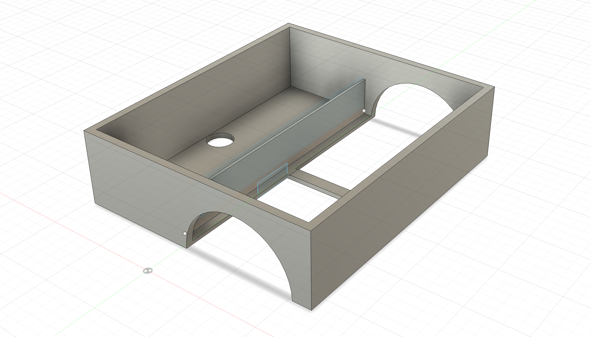

Making a new Robot from a Strata Home Bot.
I didn't have much opportunity to work on my own projects in high school, as my curriculum was a rigorous classical liberal arts education which left little time for outside endeavors, particularly those related to STEM. Now that I'm entering my sophomore year of college, I've finally settled down and begun passion projects of my own. I've worked on a couple basic RPI projects in the past, but they've all been software. I believe that in order to become a better software engineer I have to begin understanding hardware. When someone gave me an off brand Roomba which no longer worked, I was thrilled.


Initial approach
I wanted to just send input directly to the motherboard in order to get it to move, so i could ease myself into the process. So i got an ESP32 and went to work. However, this wasn't like previous devices I had worked with. I was working with a device which wasn't designed to be repurposed. After many hours of messing with the baud rates between the ESP32 and the motherboard (shown below) I finally decided it wasn't worth it to keep trying. So I tore the robot apart and salvaged what valuable electronics remained.


Changes in my approach
After I realized that I couldn't just plug and play, I tore apart the bot for what valuable parts remained, I got to work analyzing them. In particular, I wanted to get a basic design for the wheels of the bot.


There were three wheels in the original bot. Two were motorized and the third one was support. I decided to make a frame for these three wheels in Fusion360. This was my first encounter with parametric modeling, which took a little getting used to. Previously I had only known of Blender, which is primarily a 3D modeller.



Now that I had the chassis, I could attach the motors. With a little tweaking, it worked well enough. The little white box is my first print ... I may have slightly misjudged the dimensions at first :). The black box is the original battery to the robot.


Adding electrical components
At first, I thought I could connect the ESP32 directly to the motors themselves. I was incorrect in this assumption, as the voltage difference would have fried the microcontroller. Instead, I obtained two motor drivers and (after a bit of experimentation) I was able to connect the esp32 to the motors through these drivers.